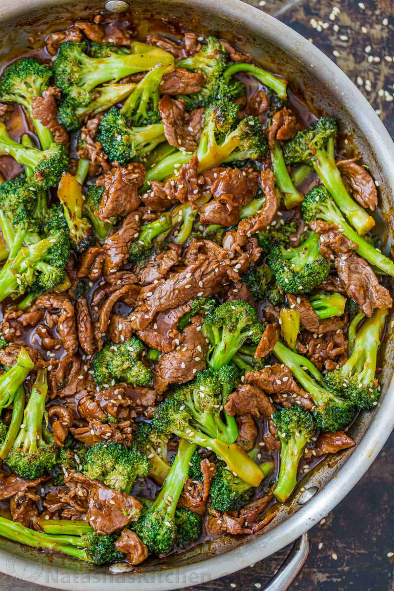

Beef and Broccoli

Ingredients
Beef and Broccoli
- 1 lbs flank steak(or sirloin), sliced thinly against the grain
- 1 large head of broccoli, cut into bite-sized florets (about 4 cups)
- 2 tbsp vegetable oil, divided
- 1 tbsp sesame seeds (optional garnish)
- 2 green onions, sliced (optional garnish)
The Stir-Fry Sauce
- 1/2 cup soy sauce (or low-sodium soy sauce)
- 1/3 cup beef broth
- 3 tbsp brown sugar
- 1 tbsp cornstarch
- 1 tbsp garlic, minced
- 1 tsp fresh ginger, grated
- 1 tsp toasted sesame oil
Instructions step by step
- Whisk the Sauce: In a small bowl, whisk together the soy sauce, beef broth, brown sugar, cornstarch, garlic, ginger, and sesame oil until the cornstarch is completely dissolved. Set aside.
- Steam-Fry the Broccoli: Heat 1 tablespoon of vegetable oil in a large skillet over medium-high heat. Add the broccoli florets and 2 tablespoons of water. Cook for 3 to 4 minutes, stirring frequently, until the broccoli is bright green and crisp-tender. Remove the broccoli from the skillet and set aside on a plate.
- Sear the Beef: Turn the heat up to high and add the remaining 1 tablespoon of vegetable oil. Add the beef slices in a single layer (cook in batches if your pan is small to avoid crowding). Sear for 1 to 2 minutes per side until beautifully browned.
- Thicken the Sauce: Pour the prepared sauce mixture directly into the skillet with the beef. Bring it to a simmer. Let it cook for about 1 minute, stirring constantly, until the sauce thickens into a glossy glaze.
- Combine and Serve: Return the cooked broccoli to the skillet. Toss everything together for 30 seconds to warm the broccoli through and coat it in the sauce. Garnish with sesame seeds and green onions, and serve hot over rice.
Back to main page